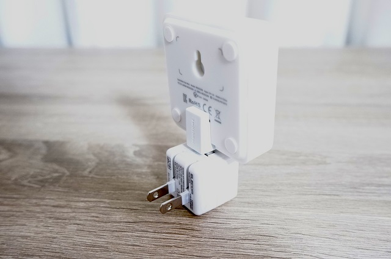
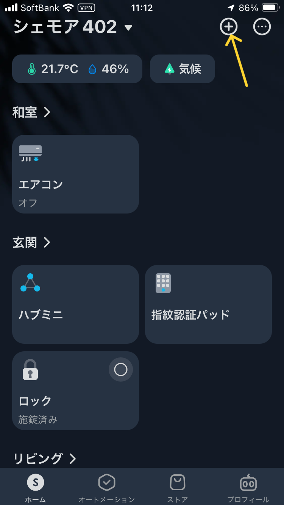
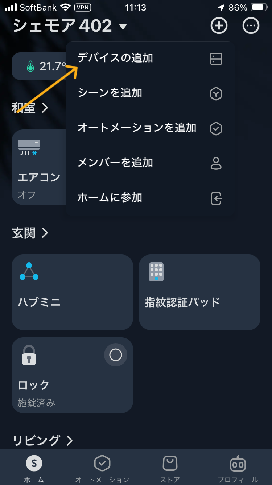
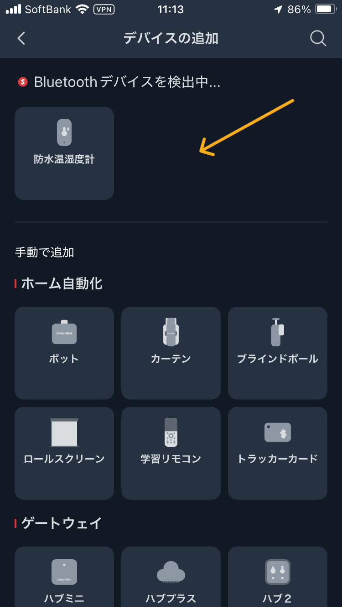
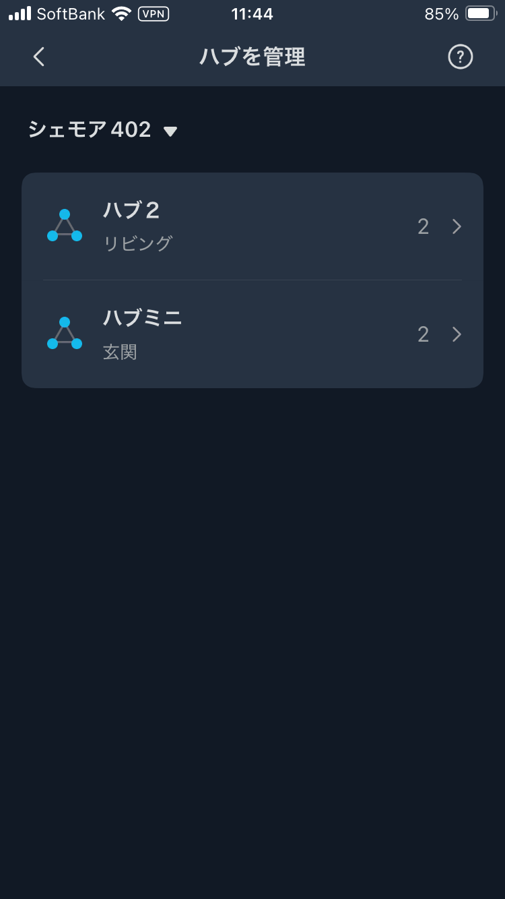

ハブミニをコンセント接続
SwitchBot ハブミニ専用コネクタ アダプター USB Type-A to Micro USB A
https://www.amazon.co.jp/dp/B08DD238YX
エレコム AC充電器
https://www.amazon.co.jp/dp/B01M7U0QPI

アプリからデバイス登録
アプリのホーム画面右上のプラスマークを押す

デバイスの追加を押す

Bluetoothでハブミニが検出されるので押す

Wi-Fi設定
画面の指示に従ってWi-Fi設定(2.4GHz)完了です
確認
アプリのホームプロフィールから「ハブの管理」を選択
正常に追加されていればハブミニが増えている
